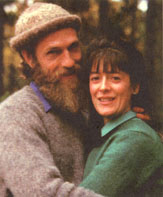
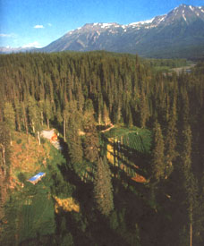
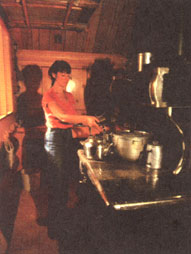
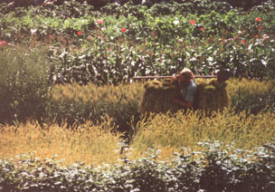
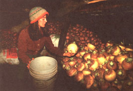
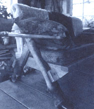

Living The Dream
Author's story of homesteading in British Columbia.
By Deanna Kawatski
August/September 1991
By Deanna Kawatski
At one time or another, all of us have thought of starting over in some wild, green corner of the
world. the Kawatski family has done it-and they have a remarkable story of self-sufficiency.
Tucked away among the mountains in a northern corner of British Columbia, a handhewn log home sits like a speck of propriety in the wilderness. Despite the logs, it's quite an elegant home with its dormer peaks and big windows looking down from a clearing on a hillside to the neat vegetable garden below. But just beyond the tidy house and clearing, the wild roses, columbine, and yarrow scramble over the hillside in summer. And in the neat garden itself, a creek frolics like a truant through the straight rows of hardworking cabbages and potatoes and onions and carrots.
Across a field, a blond, bearded man my husband, Jay--drives a gaggle of crabby geese toward a fresh patch of horsetails. I am nearby, harvesting rhubarb with my eleven-year-old daughter while my young son looks on. This is no hobby for us. It is our way of life, and has been for the past seven years. My family and I live in the wilderness, 120 miles from the nearest town.
I wasn't born to this life; I adopted it. I grew up in Kamloops, British Columbia, went to the university there, and then spent eight years seeing the world, mostly large cities like London, Berlin, and Paris. I tried hard to adapt to big-city life. In London, I was a nanny for twin boys. In Berlin, I had a job building harpsichords. I drank tea with the proud Afghanis before the Soviet invasion, and visited India, where I saw the human spirit soar above famine and poverty.
Short, intense bouts of tree-planting in British Columbia financed most of my wan derings abroad. It was a schizophrenic existence. One month I would be dressed in lace, sipping cafe au lait at a fancy sidewalk cafe in Paris. The next month, I was standing on some obscure Canadian mountainside, with my clothes caked in dirt and a mattock in my hand, planting trees for tomorrow.
But my serious move to wilderness life began in 1978, when the B.C. Forest Service hired me to be the first female lookout attendant at the Bob Quinn fire tower, 120 miles north of Stewart-a tiny town near the Alaskan border. The prospect of spending three months alone on a mountaintop terrified me, but I needed the money. I also had enough solitary pursuits-writing, yoga, and reading-to keep me busy. I intended to explore my surroundings as much as possible. Wanting a little company, I acquired a husky pup in Stewart.
While in Stewart, I heard stories about the wild hermit who lived in the Bob Quinn Lake area near the fire tower. His bare feet would inevitably beat a path to my door, people said. His reputation as an unpredictable barbarian left such an impression in my mind that when I bought a buck knife it wasn't with the bears in mind.
The Bob Quinn lookout sat on a mossy rock at 4,310 feet, just above the tangle of alpine fir at the treeline. In every direction, as far as the eye could see, was wilderness. Mountains stood on three sides and I could see the Iskut River flowing for 100 miles down a valley. There were white ice fields to the west, and the Iskut burn, a grey 100,000-acre beast, sprawled to the north. Far below, the unpaved Stewart-Cassiar highway raised dust plumes when trucks passed.
The shack I was to call home for the summer had a single room with 23 windows. The fire finder, a heavy platform with a map and a revolving scope, sat in the center of the room. All the furniture-mot, cupboards, table, oil stove, and fridge was at crouch level so nothing would obstruct the view. Heavy cables secured the shack, none too securely, to the mountain.
During the day I often stared south at Bob Quinn Lake, with its island in the center, and from there to Desire Lake, 11/2 miles farther south. Here, rumor had it, the hermit lived in an octagonal log cabin he had built himself. Each clear night, I watched the sun set into mountains. After dark, I'd go outside to see Venus, the dippers, and Orion, hanging like delicate buttercups in a field of sky. I found that I enjoyed my solitude and felt freer than I ever had before.
One foggy afternoon, as I sat at my table writing, I saw two human figures emerge from the mist. I opened the door and invited inside what turned out to be two young boys on a hike from the nearby highway camp. A few moments later, more company arrived-two older boys, a black lab, and a nanny goat. Last but not least came the legendary hermit, who introduced himself as Jay. I felt no fear as he smiled at me. After all the wild stories, I was almost disappointed by how civilized he was.
His blond hair and beard were neatly trimmed. He was slim and fit with a luxurious mink and otter cape on his shoulders and a marten cap on his head. He even wore boots.
Jay told me he was from Wisconsin originally and had been in British Columbia for 11 years. He was 31. In pursuit of a lifelong dream to live in the wilderness and master his own fate, he had followed the uncompleted Stewart-Cassiar highway as far as he could. He had put in a hard first winter alone in a dingy cabin on the shore of Bob Quinn Lake while he searched the valleys and forests for a suitable building site. Spring found him on the shore of Desire Lake.
THE DECISION TO HAVE MY BABY IN OUR wilderness home on Desire Lake was not an easy one. I was 29 and this was my first baby. If anything went wrong, it was a 11/2-hour hike through the woods and a 120-mile drive over a potholed road to the nearest hospital. On the other hand, I've always been healthy and I have a husband, Jay, whose years of solitary living have taught him not to panic in times of danger.
During my pregnancy, I visited my doctor five times. They assured me everything was fine. So Jay and I carefully prepared ourselves for the birth. I practiced breathing techniques and relaxation, kept up my exercise, and ate a good diet. Even toward the end, a hike of eight miles was nothing unusual.
As I should have realized, though, there is no way to plan life around nature. Like many first-time mothers, my due date, June 15, came and went. To make matters worse, there hadn't been any rain for weeks and I was getting worried about our garden. It was in the valley two miles away where we were building our new cabin. At this stage, I didn't want to be alone while Jay went off to tend the vegetables, so on June 18, we both hiked to the garden.
We worked there all afternoon and evening, thinning and watering the lettuce and beets. In the evening, as we sat eating supper beside the open fire, I noticed that my tailbone was sore and it was impossible to find a comfortable sitting position. Having only stumps and ground to sit on, of course, didn't help things much.
We slept on boards in the half-finished cabin that night, then on June 19 worked in the garden again. The sun beat down on us, and it was a great effort for me to move from row to row. When we sat down by the river to rest, I suddenly realized we had no time to lose. We had to get back to our cabin immediately.
It took strength to climb that first great hill out of the valley, a steep rise of 200 feet. It was like climbing 20 flights of stairs while in labor. Then, after another 100-foot hill, I felt a sudden burst of warm liquid down my legs. I knew that the amniotic membrane had burst. It was 5 p.m., and the contractions began with two miles of rough trail to go.
Wilderness life is no genteel retirement. An endless round of pioneer chores keeps the family on the go from sunup to sundown.
When the waves of painful contractions forced me to stop, swarms of mosquitoes crawled into my eyes, ears, and nose and bit me without mercy. But I also vividly remember the masses of butterflies that kept exploding from the trail ahead of us.
Two hours later, filthy and exhausted, we reached the cabin. I lay down while Jay flew into a blizzard of activity. He chopped wood, started the fire, fed the animals, fetched and heated water, made dinner, cut up the three gallons of rhubarb he had packed back form the valley, and massaged the small of my back when the pain became too severe.
I squatted and tried to keep control by panting, but suddenly I was possessed by such a strong urge that I found myself growling like an animal and pushing. Before I knew it, the baby's head was through. I pushed some more and the rest of her slithered out, followed by the glistening cord.
I screamed as Jay appeared to fumble and drop her. He was actually whipping her around to get the cord off her neck. She was a moonstone color and her head was so pointed I couldn't help but wonder what planet she was from.
Jay quickly sucked the mucus out of her nose and mouth and she began to kick and cry. He laid her across my stomach and I massaged the vermix into her skin. To my amazement, she hoisted herself up on elbows and knees, threw her head back and looked into my face. It was 5:20 a.m. and all was well. The strength of her cry assured us that Natalia had made a safe crossing from the spirit world.
-Deanna Kawatski
Year by year, Jay had learned more about hunting, about gathering and preserving food, and about living in equilibrium with the beautiful, but uncaring, land. He taught himself wood carving and became adept at sewing skins and weaving moose hide into snowshoes.
Five days after Jay's first visit, he was back with some homemade huckleberry jelly, rhubarb wine, and a tiny chair that he had carved. Thus began our friendship. When I saw the red canoe crossing Bob Quinn Lake, far below, I knew that I could expect Jay within a few hours. For the chance to see me, he would make a round trip of 19 miles-15 miles hiking, 4 miles paddling. The final trail up the mountain to the lookout was very rugged, a near-vertical rise of 2,500 feet.
At the end of the summer, I visited Jay's octagonal cabin on Desire Lake. Sun streamed through a bay window where tea roses grew. Wolf skins hung on homemade furniture. Books, carvings, and wooden toys lined the shelves. I enjoyed, in particular, the wooden owl whose wings rose up when a towel was hung on the hook at its base.
The following summer, I returned to the fire tower once again. To make a long and romantic story short, we were married that fall.
In November, I began my initiation into bush life. In some ways the transition was easy. Even when I lived in cities, I usually chose walking over riding buses, and was used to covering miles on foot. But now, hiking was a way of life; we are three miles by a boggy foot trail from the highway, and we also go on long rambles near home.
I think that the hardest part of the transition, apart from loneliness and not being able to flit off on a whim, was adjusting to the short winter days. In the past, it had been so easy to flick a switch, but here we had no electricity. And when the days finally stretched and warmed, and I could peel off my winter clothes, I was attacked by every size and shape of insect imaginable. When it comes to wilderness living, if anything can knock someone from an idealist to a realist in 10 minutes flat, it is the bugs.
In June 1980 our daughter Natalia was born in the cabin beside Desire Lake. The next spring we moved to the rich, alluvial land in the Ningunsaw River Valley. I had felt a real sense of peace at our home on Desire Lake, but we could never grow a decent garden in the acidic, weed-choked soil there.
Our new home sits in a clearing that we carved from the thick jungle on this beautiful 300-acre river flat. The Ningunsaw River, a tributary of the Iskut, flows east to west through the center of our valley, and the giant spruce, balsam, and cottonwoods there can make us feel as small as gnomes at times. In season, even the stinging net tles, cow parsnips, and ferns tower over our heads. On one side of the valley, a peak we simply call South Mountain rises to an altitude of 6,000 feet, and Rocky Mountain goats live on its high ridges.
At first, we slept in the 12 X 16-foot kitchen. During the day, we moved an entire hill with sweat and shovels so that we could build our 21 X 34-foot addition. We now have two stories plus an attic.
We are the first settlers in this valley. Even the Indians chose areas farther north or south, where the salmon are. We began by squatting on the land, but now have a license of occupation from the government. That means we pay taxes but have official permission to stay here.
0ur family of four lives on between $2,000 and $3,000 a year. Jay makes $2,000 to $2,500 a year form his wood carvings and does a little tanning for local trappers. We earn $660 a year keeping weather records for Environment Canada and also trade some of the vegetables from our three-acre garden.
Out here, I've learned the pleasures and frustrations of dog sledding and snowshoeing. I've learned the bitter realities of using the outhouse at -30°C-or worse, during the bug season. I've learned patience during the endless fall rains.
Bit by bit, we are engineering a few small luxuries. Until recently, the closest thing we had to running water was me descending to the creek with buckets. Now a gasoline pump eliminates the tedious and exhausting chore of hauling those five-gallon pails of water up a steep 40-foot slope. We have a cold-water tap right in the kitchen and eventually will have a hot-water system as well. Also in our plans is a water wheel, to give us electricity for more precious light in winter.
We subsist on wild meat, with domestic chickens, rabbits, and geese to supplement it. We never shoot more than one moose a year, and we use every part. We boil down the bones for soup stock, and make the skin into rawhide.
Our lives are tightly governed by the seasons. During the warm months, we're busy growing and storing away food for the winter. Our garden provides us and our animals with all the vegetables we need. Last year, we harvested 1,755 pounds of potatoes and 1,050 pounds of carrots. We also grew parsnips, peas, cabbage, lettuce, broccoli, cauliflower, spinach, brussels sprouts, onions, garlic, strawberries, rhubarb, raspberries, asparagus, celery, and parsley. Our root cellar keeps our produce fresh until the next growing season.
The endless round of pioneer chores often prevents us from going on casual hikes. Even as I write this, I am hustling off every few sentences to split and carry in wood, to feed the fire, to carry laundry to the creek, and to put water on the stove.
I also have a great deal to wash, all by hand, in spring. I move my laundry down to the creek to enjoy the sunshine and mountains as I scrub. I use wool gloves inside rubber gloves to protect myself from the icy bite of the creek water.
In the snowy months, I have more time for projects like writing, knitting, sewing, and stitching slippers from some of the hides that Jay has tanned. Jay spends may hours carving. Our daughter learns her three R's through a correspondence course, and in her spare time, she shares our artistic enthusiasm for carving and making things. We all find ample time for other kinds of learning too: Every moment we are surrounded by nature, the greatest teacher on earth.
Winter also allows us more time to explore our wilderness. During the day, the frozen river becomes our highway and we travel on foot, on skis, or by sled. Jay uses a snowmobile to haul firewood and supplies. During the long winter nights, Jay and I often take turns reading books aloud.
Our lifestyle is not for everyone. Each person has to choose his or her priorities. For me, a relatively pure environment is more important that a world of gadgets. We delight in the wilderness around us, and in the comings and goings of animals, weath er, and seasons. But people who don't understand still shake their heads and say that we live "in the middle of nowhere.
" We also value the self-sufficiency that comes with our pioneer life. Sometimes, as I look out at the clothesline and see diapers, blinding white in the sunlight and washed on the scrub board in the tradition of my grandmother, I imagine her smile of approval. I experience a sense of accomplishment. And when I watch our cupboards fill up with jars of berries, pickles, meat, and trout, and know that they will see us through to the next harvest, there is a satisfying feeling of security.
Granted, it is difficult to live without friends and neighbors. So we sometimes dream of a friendly community springing up around us-people who share similar ideals. Unfortunately, most people who come north are a transient breed. They seem to be holdovers from the gold rush era, and they want to head north, strike it rich, rape the land, and flee south again to the rewards of civilization. Meanwhile, we'll continue to live in harmony with the wild, respecting the thousand and one creatures, understanding our own insignificance in the great scheme of things and loving this land that we have chosen to call home.
Jay and Deanna Kawatski gave up the city lights for a handmade log cabin in northern B.C., 120 miles from the nearest town. Their family of four lives on less than $3,000 a year.
|
 Jay and Deanna Kawatski. Right: The Kawatski homestead near Bob Quinn Lake, British Columbia. |
 Deanna (above) cooks for the family on a cast-iron stove while Jay (top) prepares a rabbit hide for tanning. Son Ben never lacks transactions in the workshop. |
 The Kawatski's root cellar (above) overflows with carrots, potatoes, and turnips. Jay carries grain bundles (top) tied to the handle of his shovel. |
|
 |
 |
 |
|
 |
|
|